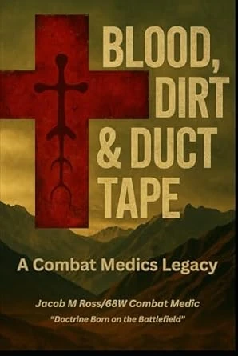
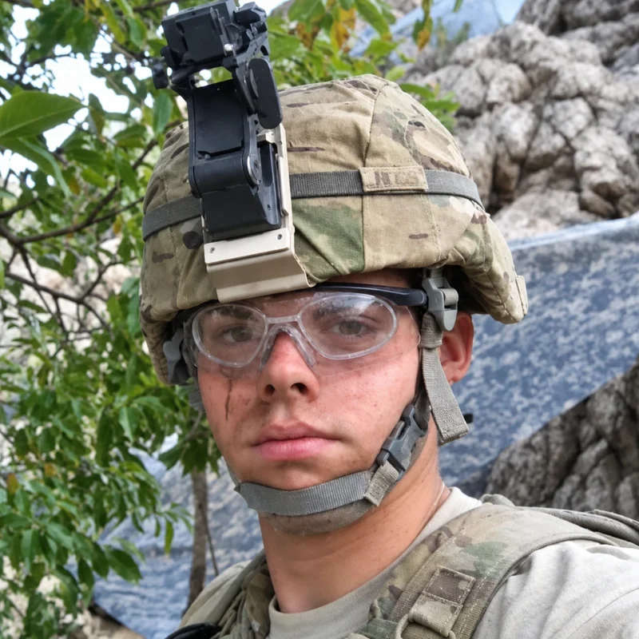

A book by Jacob Ross · Combat Medic
Blood, Dirt
& Duct Tape:a combat medic’s legacy.
Twenty thousand words · Written in the field, not the classroom

“Never again will I run without readiness.”The line the book was built around
The author
Why I wrote it

I’m Jacob Ross. I served as a combat medic in Afghanistan, I’m a Sergeant First Class in the Army National Guard, and I founded Medic Team One to teach civilians what I learned out there.
This book started with a near-tragedy involving my son. It was finished by what I saw in Afghanistan. Between those two things, everything I believed about being ready changed.
I wrote it for Pfc. Andrew J. Keller, and for the others who didn’t come home. It deals with loss, guilt, and readiness — not as ideas, but as the things that decide whether somebody lives.
Part of it is what I carry. The rest is doctrine you can actually use.
— Jacob Ross, service-disabled combat medic
Inside
What’s in it
Twenty thousand words, split between the things I carried out of Afghanistan and the doctrine I built from them. Not a textbook, not a memoir — what I learned, written down so somebody else doesn’t have to learn it the same way.
The Medicine
The procedures I actually used in Afghanistan, rewritten for people who aren’t medics and won’t have a team behind them.
The Cost
What it took to learn this, and what I still carry from it. The parts most manuals leave out.
The Systems
Cache systems, Speedball resupply, the 8-Bag SOP — the doctrine I built so I’d never be caught unready again.
Dedicated to
Pfc. Andrew J. Keller, and the other soldiers we lost.
Turn trauma into training.
If you take one thing from the book, take that.
Buy on AmazonAmazon handles the transaction, tax and fulfillment. You receive the book, and you support the work of turning veteran experience into civilian preparedness training.